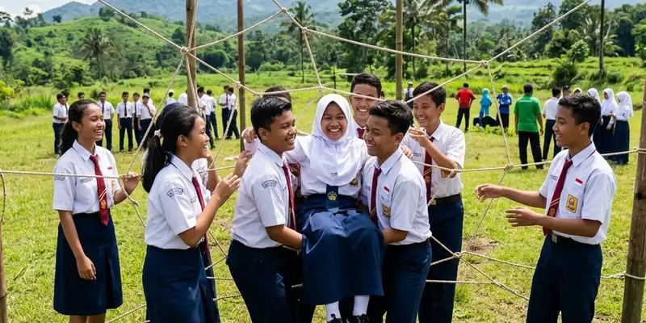

MPLS outbound adalah program pengenalan lingkungan sekolah bagi siswa baru yang dikemas dengan aktivitas luar ruang agar proses adaptasi berlangsung lebih interaktif dan tidak membosankan.
Ringkasan Inti
- MPLS outbound membantu siswa baru beradaptasi dengan lingkungan sekolah secara lebih aktif
- Pelaksanaan MPLS di Indonesia mengacu pada ketentuan yang melarang unsur perpeloncoan
- Prosedur MPLS outbound mencakup perencanaan, pelaksanaan, dan evaluasi
- Kegiatan MPLS outbound sebaiknya tetap menjaga unsur edukasi, bukan sekadar hiburan
- Kerja sama dengan vendor berpengalaman membantu kelancaran pelaksanaan MPLS
Apa Manfaat MPLS Outbound bagi Siswa Baru?
Manfaat utama MPLS outbound bagi siswa baru adalah mempercepat proses adaptasi terhadap lingkungan sekolah sekaligus membangun interaksi sosial yang positif antarsiswa baru.
Melalui aktivitas kelompok dalam format outbound, siswa baru memiliki kesempatan lebih besar untuk saling mengenal dibandingkan hanya duduk mendengarkan penjelasan tata tertib di dalam kelas. Permainan kelompok yang dirancang dengan baik juga dapat membantu siswa memahami nilai kerja sama dan komunikasi sejak awal masa sekolah.
Selain manfaat sosial, MPLS outbound juga memberi kesempatan bagi guru untuk mengamati karakter siswa baru secara lebih natural, yang dapat menjadi bahan pertimbangan dalam pembinaan siswa selanjutnya.

Kolaborasi dalam aktivitas kelompok di luar ruang dapat mempererat hubungan antar siswa baru dengan cepat.
Bagaimana Prosedur Pelaksanaan MPLS Outbound di Sekolah?
Prosedur pelaksanaan MPLS outbound umumnya mencakup tahap perencanaan materi, koordinasi dengan vendor atau panitia internal, pelaksanaan kegiatan, dan evaluasi setelah program selesai.
Tahapan yang biasa dilakukan sekolah meliputi:
- Penyusunan tujuan dan tema MPLS sesuai kebutuhan sekolah
- Koordinasi dengan vendor outbound apabila sekolah menggunakan jasa pihak ketiga
- Penyusunan rundown yang memadukan pengenalan fasilitas sekolah dengan aktivitas kelompok
- Pelaksanaan kegiatan dengan pengawasan guru dan fasilitator
- Evaluasi bersama untuk menilai efektivitas program dan masukan untuk tahun berikutnya
Sekolah yang bekerja sama dengan vendor seperti Gemilang Katun Outbound biasanya mendapatkan bantuan penyusunan rundown serta penyediaan instruktur berpengalaman untuk memandu sesi kegiatan.
Apa Saja Aturan yang Perlu Diperhatikan dalam Pelaksanaan MPLS?
Aturan utama yang perlu diperhatikan dalam pelaksanaan MPLS adalah larangan unsur perpeloncoan, kewajiban menjaga aspek edukatif, serta perhatian terhadap keselamatan dan kenyamanan siswa baru.
Ketentuan yang berlaku di Indonesia menegaskan bahwa kegiatan pengenalan lingkungan sekolah harus bersifat ramah siswa, tidak mengandung kekerasan fisik maupun verbal, serta tidak membebani siswa dengan tugas yang tidak relevan dengan tujuan pendidikan. Ketika MPLS dikemas dalam format outbound, sekolah tetap perlu memastikan setiap aktivitas dirancang untuk tujuan edukatif, bukan sekadar hiburan atau ajang unjuk kekuasaan senior terhadap siswa baru.
Pengawasan guru selama kegiatan berlangsung juga penting untuk memastikan seluruh sesi berjalan sesuai rencana dan tetap dalam koridor aturan yang berlaku.
Kesimpulan
MPLS outbound dapat menjadi cara efektif mengenalkan lingkungan sekolah kepada siswa baru selama tetap memperhatikan aspek edukatif, keselamatan, dan kepatuhan terhadap aturan yang berlaku. Kerja sama dengan vendor berpengalaman seperti Gemilang Katun Outbound dapat membantu sekolah menyusun program yang terstruktur dan sesuai kebutuhan siswa baru di Malang Raya.
FAQ
Tidak, kegiatan MPLS harus tetap edukatif dan tidak boleh mengandung unsur kekerasan atau perpeloncoan sesuai ketentuan yang berlaku.
Durasi MPLS bervariasi tergantung kebijakan sekolah, namun umumnya berlangsung selama beberapa hari di awal tahun ajaran.
Tidak wajib, sekolah dapat melaksanakan MPLS secara mandiri, namun kerja sama dengan vendor berpengalaman dapat membantu kelancaran teknis kegiatan.